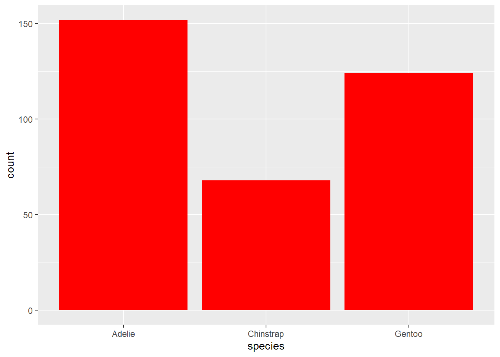
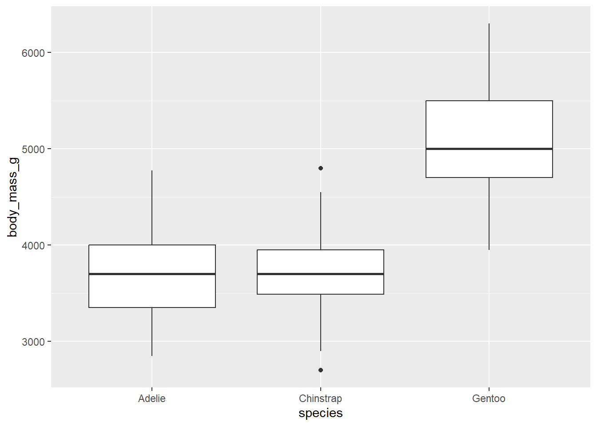

pacman::p_load(tidyverse, patchwork)Self Practice 1: R for Data Science
1 Data visualization
library(styler)library(palmerpenguins)
library(ggthemes)palmerpenguins::penguins# A tibble: 344 × 8
species island bill_length_mm bill_depth_mm flipper_length_mm body_mass_g
<fct> <fct> <dbl> <dbl> <int> <int>
1 Adelie Torgersen 39.1 18.7 181 3750
2 Adelie Torgersen 39.5 17.4 186 3800
3 Adelie Torgersen 40.3 18 195 3250
4 Adelie Torgersen NA NA NA NA
5 Adelie Torgersen 36.7 19.3 193 3450
6 Adelie Torgersen 39.3 20.6 190 3650
7 Adelie Torgersen 38.9 17.8 181 3625
8 Adelie Torgersen 39.2 19.6 195 4675
9 Adelie Torgersen 34.1 18.1 193 3475
10 Adelie Torgersen 42 20.2 190 4250
# ℹ 334 more rows
# ℹ 2 more variables: sex <fct>, year <int>glimpse(penguins)Rows: 344
Columns: 8
$ species <fct> Adelie, Adelie, Adelie, Adelie, Adelie, Adelie, Adel…
$ island <fct> Torgersen, Torgersen, Torgersen, Torgersen, Torgerse…
$ bill_length_mm <dbl> 39.1, 39.5, 40.3, NA, 36.7, 39.3, 38.9, 39.2, 34.1, …
$ bill_depth_mm <dbl> 18.7, 17.4, 18.0, NA, 19.3, 20.6, 17.8, 19.6, 18.1, …
$ flipper_length_mm <int> 181, 186, 195, NA, 193, 190, 181, 195, 193, 190, 186…
$ body_mass_g <int> 3750, 3800, 3250, NA, 3450, 3650, 3625, 4675, 3475, …
$ sex <fct> male, female, female, NA, female, male, female, male…
$ year <int> 2007, 2007, 2007, 2007, 2007, 2007, 2007, 2007, 2007…?penguins
ggplot(penguins,
aes(x = flipper_length_mm, y = body_mass_g)) +
geom_point(aes(color = species, shape = species)) +
geom_smooth(method=lm) +
labs(title = "Body mass and flipper length",
subtitle = "Dimensions for Adelie, Chinstrap, and Gentoo Penguins",
x = "Flipper length (mm)", y = "Body masss (g)",
color = "Species", shape = "Species") +
scale_color_colorblind()Exercises
How many rows are in penguins? How many columns?
- 344 rows, 8 columns
What does the bill_depth_mm variable in the penguins data frame describe? Read the help for ?penguins to find out.
- a number denoting bill depth (millimeters)
Make a scatterplot of bill_depth_mm vs. bill_length_mm. That is, make a scatterplot with bill_depth_mm on the y-axis and bill_length_mm on the x-axis. Describe the relationship between these two variables.
ggplot(penguins,
aes(x = bill_length_mm, y = bill_depth_mm,
color = species, shape = species)) +
geom_point() +
geom_smooth(method = "lm")
- bill depth increases as bill length increases for all threee species. What happens if you make a scatterplot of species vs. bill_depth_mm? What might be a better choice of geom?
- Boxplot would be a better choice for a categorical variable vs a continuous variable.
ggplot(penguins,
aes(x = species, y = bill_depth_mm)) +
geom_boxplot()Why does the following give an error and how would you fix it?
- To add aes argument for first layer (ggplot)
ggplot(data = penguins,
aes(x = bill_depth_mm, y = body_mass_g,
color = species, shape = species)) +
geom_point() +
geom_smooth(method = "lm")What does the
na.rmargument do ingeom_point()? What is the default value of the argument? Create a scatterplot where you successfully use this argument set toTRUE.- it means remove the data points that are “N.A”. No more error message
ggplot(data = penguins,
aes(x = bill_depth_mm, y = body_mass_g,
color = species, shape = species)) +
geom_point(na.rm = TRUE) +
geom_smooth(method = "lm")
- Add the following caption to the plot you made in the previous exercise: “Data come from the palmerpenguins package.” Hint: Take a look at the documentation for
labs().
ggplot(data = penguins,
aes(x = bill_depth_mm, y = body_mass_g,
color = species, shape = species)) +
geom_point(na.rm = TRUE) +
geom_smooth(method = "lm") +
labs(title = "Bill depth and Body mass",
subtitle = "Data come from the palmerpenguins package")
- Recreate the following visualization. What aesthetic should
bill_depth_mmbe mapped to? And should it be mapped at the global level or at the geom level?
ggplot(penguins,
aes(x = flipper_length_mm, y = body_mass_g,
color = bill_depth_mm)) +
geom_point() +
geom_smooth()- Check this output.
ggplot(
data = penguins,
mapping = aes(x = flipper_length_mm, y = body_mass_g, color = island)
) +
geom_point() +
geom_smooth(se = FALSE)
Will these two graphs look different? Why/why not?
- Same. Mapping is the same.
ggplot(
data = penguins,
mapping = aes(x = flipper_length_mm, y = body_mass_g)
) +
geom_point() +
geom_smooth()
ggplot() +
geom_point(
data = penguins,
mapping = aes(x = flipper_length_mm, y = body_mass_g)
) +
geom_smooth(
data = penguins,
mapping = aes(x = flipper_length_mm, y = body_mass_g)
)
1.3 ggplot2 calls (use of pipe |>)
penguins |>
ggplot(aes(x = flipper_length_mm, y = body_mass_g)) +
geom_point()
1.4 Visualizing distributions
ggplot(penguins,
aes(x = fct_infreq(species))) +
geom_bar()
Tip
fct_infreq()- by number of observations with each level, largest firstfct_inorder()- by order of first appearancefct_inseq()- by numberical value of level
ggplot(penguins, aes(x = body_mass_g)) +
geom_histogram(binwidth = 200)
ggplot(penguins, aes(x = body_mass_g)) +
geom_density()1.4.3 Exercises
- Make a bar plot of species of penguins, where you assign species to the y aesthetic. How is this plot different?
ggplot(penguins,
aes(y = fct_infreq(species))) +
geom_bar()
How are the following two plots different? Which aesthetic, color or fill, is more useful for changing the color of bars?
- color is applied as the outline of the bar, while fill is applied to the whole bar.
ggplot(penguins, aes(x = species)) +
geom_bar(color = "red")
ggplot(penguins, aes(x = species)) +
geom_bar(fill = "red")
What does the bins argument in geom_histogram() do?
- it sets the size/range of the bar of a category.
Make a histogram of the carat variable in the diamonds dataset that is available when you load the tidyverse package. Experiment with different binwidths. What binwidth reveals the most interesting patterns?
diamonds# A tibble: 53,940 × 10
carat cut color clarity depth table price x y z
<dbl> <ord> <ord> <ord> <dbl> <dbl> <int> <dbl> <dbl> <dbl>
1 0.23 Ideal E SI2 61.5 55 326 3.95 3.98 2.43
2 0.21 Premium E SI1 59.8 61 326 3.89 3.84 2.31
3 0.23 Good E VS1 56.9 65 327 4.05 4.07 2.31
4 0.29 Premium I VS2 62.4 58 334 4.2 4.23 2.63
5 0.31 Good J SI2 63.3 58 335 4.34 4.35 2.75
6 0.24 Very Good J VVS2 62.8 57 336 3.94 3.96 2.48
7 0.24 Very Good I VVS1 62.3 57 336 3.95 3.98 2.47
8 0.26 Very Good H SI1 61.9 55 337 4.07 4.11 2.53
9 0.22 Fair E VS2 65.1 61 337 3.87 3.78 2.49
10 0.23 Very Good H VS1 59.4 61 338 4 4.05 2.39
# ℹ 53,930 more rowsp1 <- ggplot(diamonds,
aes(x = carat)) +
geom_histogram(binwidth = 0.01) +
labs(title = "carat with 0.01 binwidth")p2 <- ggplot(diamonds,
aes(x = carat)) +
geom_histogram(binwidth = 0.05) +
labs(title = "carat with 0.05 binwidth")p3 <- ggplot(diamonds,
aes(x = carat)) +
geom_histogram(binwidth = 0.1) +
labs(title = "carat with 0.1 binwidth")p1/p2/p31.5 Visualising relationship
1.5.1 A numerical and a categorical variable
To visualize the relationship between a numerical and a categorical variable we can use side-by-side box plots. A boxplot is a type of visual shorthand for measures of position (percentiles) that describe a distribution. It is also useful for identifying potential outliers
ggplot(penguins, aes(x = species, y = body_mass_g)) +
geom_boxplot()
ggplot(penguins, aes(x = body_mass_g, color = species, fill = species)) +
geom_density(linewidth = 0.75, alpha = 0.2)1.5.2 Two categorical variables
We can use stacked bar plots to visualize the relationship between two categorical variables. For example, the following two stacked bar plots both display the relationship between island and species, or specifically, visualizing the distribution of species within each island.
The first plot shows the frequencies of each species of penguins on each island. The plot of frequencies shows that there are equal numbers of Adelies on each island. But we don’t have a good sense of the percentage balance within each island.
ggplot(penguins, aes(x = island, fill = species)) +
geom_bar()
The second plot, a relative frequency plot created by setting position = “fill” in the geom, is more useful for comparing species distributions across islands since it’s not affected by the unequal numbers of penguins across the islands. Using this plot we can see that Gentoo penguins all live on Biscoe island and make up roughly 75% of the penguins on that island, Chinstrap all live on Dream island and make up roughly 50% of the penguins on that island, and Adelie live on all three islands and make up all of the penguins on Torgersen.
ggplot(penguins, aes(x = island, fill = species)) +
geom_bar(position = "fill") +
labs(y = "Percentage of Species on same Island")
Tip
Use position = "fill" argument in geom_ for a relative frequency plot.
1.5.3 Two numerical variables
So far you’ve learned about scatterplots (created with geom_point()) and smooth curves (created with geom_smooth()) for visualizing the relationship between two numerical variables. A scatterplot is probably the most commonly used plot for visualizing the relationship between two numerical variables.
ggplot(penguins, aes(x = flipper_length_mm, y = body_mass_g)) +
geom_point(aes(color = species, shape = island))
1.5.4 Three or more variables
As we saw in Section 1.2.4, we can incorporate more variables into a plot by mapping them to additional aesthetics. For example, in the following scatterplot the colors of points represent species and the shapes of points represent islands.
ggplot(penguins, aes(x = flipper_length_mm, y = body_mass_g)) +
geom_point(aes(color = species, shape = island))
However adding too many aesthetic mappings to a plot makes it cluttered and difficult to make sense of. Another way, which is particularly useful for categorical variables, is to split your plot into facets, subplots that each display one subset of the data.
To facet your plot by a single variable, use facet_wrap(). The first argument of facet_wrap() is a formula, which you create with ~ followed by a variable name. The variable that you pass to facet_wrap() should be categorical.
ggplot(penguins, aes(x = flipper_length_mm, y = body_mass_g)) +
geom_point(aes(color = species, shape = species)) +
facet_wrap(~island)
1.5.5 Exercises
- The mpg data frame that is bundled with the ggplot2 package contains 234 observations collected by the US Environmental Protection Agency on 38 car models. Which variables in mpg are categorical? Which variables are numerical? (Hint: Type ?mpg to read the documentation for the dataset.) How can you see this information when you run mpg?
glimpse(mpg)Rows: 234
Columns: 11
$ manufacturer <chr> "audi", "audi", "audi", "audi", "audi", "audi", "audi", "…
$ model <chr> "a4", "a4", "a4", "a4", "a4", "a4", "a4", "a4 quattro", "…
$ displ <dbl> 1.8, 1.8, 2.0, 2.0, 2.8, 2.8, 3.1, 1.8, 1.8, 2.0, 2.0, 2.…
$ year <int> 1999, 1999, 2008, 2008, 1999, 1999, 2008, 1999, 1999, 200…
$ cyl <int> 4, 4, 4, 4, 6, 6, 6, 4, 4, 4, 4, 6, 6, 6, 6, 6, 6, 8, 8, …
$ trans <chr> "auto(l5)", "manual(m5)", "manual(m6)", "auto(av)", "auto…
$ drv <chr> "f", "f", "f", "f", "f", "f", "f", "4", "4", "4", "4", "4…
$ cty <int> 18, 21, 20, 21, 16, 18, 18, 18, 16, 20, 19, 15, 17, 17, 1…
$ hwy <int> 29, 29, 31, 30, 26, 26, 27, 26, 25, 28, 27, 25, 25, 25, 2…
$ fl <chr> "p", "p", "p", "p", "p", "p", "p", "p", "p", "p", "p", "p…
$ class <chr> "compact", "compact", "compact", "compact", "compact", "c…- Make a scatterplot of hwy vs. displ using the mpg data frame. Next, map a third, numerical variable to color, then size, then both color and size, then shape. How do these aesthetics behave differently for categorical vs. numerical variables?
ggplot(mpg,aes(x = hwy, y = displ)) +
geom_point()ggplot(mpg,aes(x = hwy, y = displ, color = cyl)) +
geom_point()ggplot(mpg,
aes(x = hwy, y = displ,
color = cyl, size = cty,
)) +
geom_point() ggplot(mpg,
aes(x = hwy, y = displ,
color = cyl, size = cty, shape = trans,
)) +
geom_point() - In the scatterplot of hwy vs. displ, what happens if you map a third variable to linewidth?
ggplot(mpg,aes(x = hwy, y = displ, size = cyl)) +
geom_point()What happens if you map the same variable to multiple aesthetics?
- Too confusing.
Make a scatterplot of bill_depth_mm vs. bill_length_mm and color the points by species. What does adding coloring by species reveal about the relationship between these two variables? What about faceting by species?
ggplot(penguins, aes(x = bill_depth_mm,
y = bill_length_mm,
color = species)) +
geom_point() +
facet_wrap(~species)Why does the following yield two separate legends? How would you fix it to combine the two legends?
ggplot(
data = penguins,
mapping = aes(
x = bill_length_mm, y = bill_depth_mm,
color = species, shape = species
)
) +
geom_point() +
labs(color = "Species")
ggplot(
data = penguins,
mapping = aes(
x = bill_length_mm, y = bill_depth_mm,
color = species, shape = species)) +
geom_point() +
labs()ggplot(penguins)
Create the two following stacked bar plots. Which question can you answer with the first one? Which question can you answer with the second one?
- Can answer, what species are found in each island.
ggplot(penguins, aes(x = island, fill = species)) +
geom_bar(position = "fill")
- second plot can answer, what percentage of each species is found in each island?ggplot(penguins, aes(x = species, fill = island)) +
geom_bar(position = "fill")